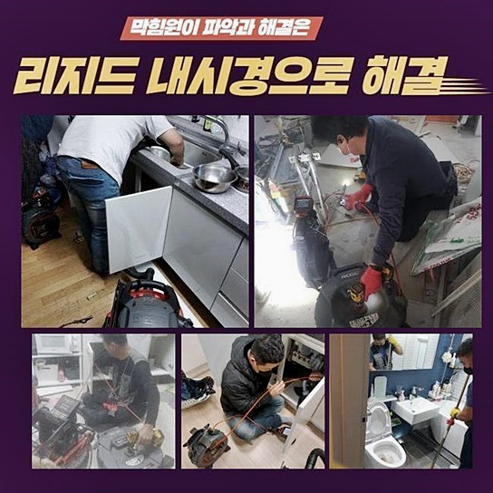
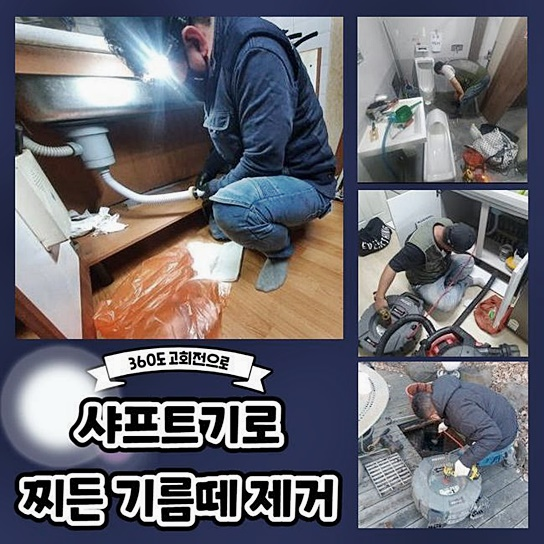
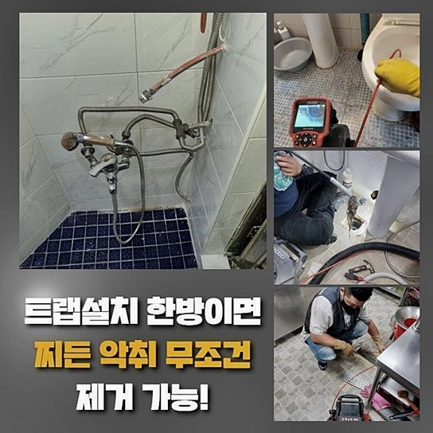
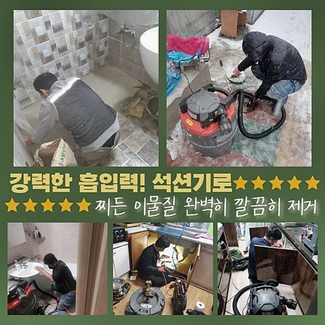
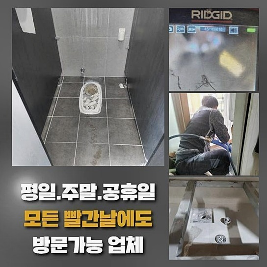
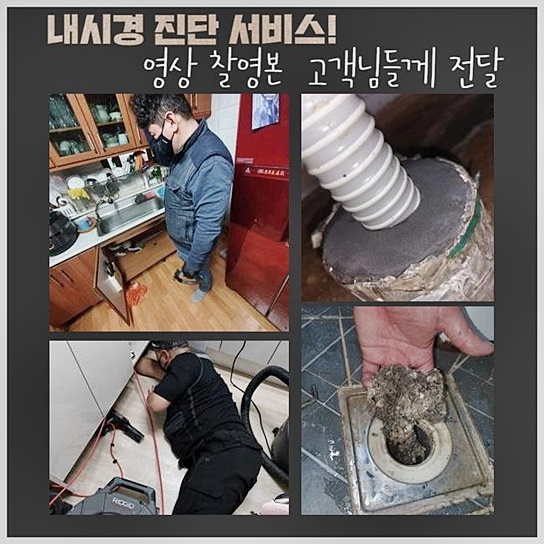
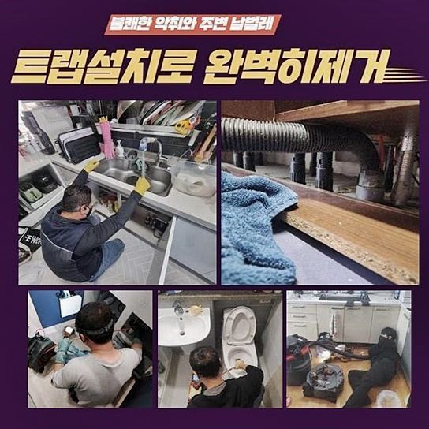

🏠 구리시 인창동하수구역류 동구동 하수구청소 설비업체
용인 하수구막힘 전문 시공 후기

📋 작업 개요
- 위치: 용인
- 서비스 유형: 하수구막힘, 배관막힘, 누수수리, 역류해결, 뚫는업체, 배관청소, 배관보수
- 작업 일시: 2024. 6. 25. 16:09
- 업체명: 하수구수사대 (010-5615-2118)
🔍 문제 상황
구리시 인창동하수구역류 동구동 하수구청소 설비업체
화장실 방향으로 향하면 뭔가 썩는 듯한 냄새 분자가 실내로 때때로 유입되는 상태를 직접 눈으로 보면 무언가 썩고 있는게 아닐까 안절부절 하실텐데요
두통을 유발하는 악취에다 추가적인 고충으로는 유속이 느려지다가 처리가 지연된다면 욕실물의 이동 장애로 연속될 수 있다는 점입니다
무슨 이유인지는 첨단 장치를 적용하지 않을 경우에는 감을 잡을 수 없다보니 베테랑 업자에게 도움을 구하여서 원기능으로 돌리는게 가장 이상적인 솔루션이죠!
욕실의 바닥부에 배치된 배수구에 장애가 생겨 시공을 의뢰하셔서 직접 출장을 갔는데 저번 달부터 유속이 느릿하게 운반되는 게 보였다며 사고 날짜도 알려주셨죠
보통 목욕이나 세안 후에 약간만 시간이 지나면 내부에 잔여하지 않고 빠져서 평상시와 같이 기다리면 해결되리라 하셨는데 나갔다가 귀가했을 무렵까지 전에 고인 물 그대로 찰랑대는 상태라서 충격을 금치못하셨다 해요
화장실로 진입하여 관측해봤더니 하수가 역행하는 상황이었고 적체된 수분의 양이 늘어나서 진입로까지 물기가 고수위로 잠겨버린 문제가 발견되었지요
청소기 기전의 석션장비로 고인 물을 덜어내 드리면서 작업할 수 있는 환경을 만들고 물기는 기본이고 이물질이 투과되었습니다

🔎 원인 분석
💡 전문가 진단: 정밀 진단 장비를 사용하여 슬러지의 고착 여부를 판명하고 타격/세척 작업을 실시했습니다.
메인이라고 할 수 있는 막힘의 근본 요소는 모두 자취를 감추지는 않은지라 배수로 전용 촬영 기구로 진단하고 현황 파악을 통한 정보로 티끌하나 없이 깨끗하게 정돈을 이어가기로 했습니다
이러한 첨단 카메라 기기는 바닥 청소기랑은 다르게 뛰어난 성능을 보유했고 긴 노즐을 유입시키고 호스 외의 틈새는 스펀지 등으로 막으면 더 아랫부분에 고여있는 오염원까지도 바깥으로 뺄 수 있어요
단순 흡입으로는 고인 찌꺼기를 일체 제거하려면 약한 성질의 물질만 수습되니까 좁은 물길만 내주고 더 깊이로 관찰기기를 넣어서 본격적인 탐사를 합니다
욕실배수구 막힘을 탄생시킨게 무엇인지 정체에 따라서 뚫어주는 도구 라인업이 약간씩 달라질 수 있으므로 시행착오를 줄이려면 장애 인자를 찾아내는게 먼저라고 할 수 있어요
본 내시경 장비는 진입로에서 넣어주면 폐수시설로 이어지는 파트에 달하기 까지 내부를 감지할 수 있고 미세한 실금과 같은 하자를 발견해 주므로 정화 작업 전에 전체 실황을 판단하는데 많은 공헌을 하는 작업입니다
내부를 스캔해 봤더니 타일과 가까운 쪽에서 뿌연 석회 뭉치들이 벽체에 붙어있었고 더 깊이 내려가보니 끈적한 점액성의 기름기가 다량 혼재된 상황이었죠
석회가 통로에 쌓이는 원인은 초반 시공을 착수하면서 시멘트 가루가 제대로 청소되지 않아서 안에서 양생과정을 거치는 케이스가 제법 많습니다
게다가 물의 구성요소인 미량의 석회 성질이 흘러내려간 각종 찌꺼기와 조직화가 되면서 그 덩어리의 크기가 확장되어 가면서 욕실쪽의 배수 문제가 촉발되는 경우도 있어요

🔧 작업 과정
접근로 시작점에 위치한 돌덩어리같은 석회 덩이는 결합 조직을 풀어주는 석회제거제를 부어서 성질이 약화되게 만들고 충분히 녹았으면 물을 내려보내는 과정으로 결합력을 약화시킨 후에 없애기로 했습니다
몰탈이 어느 정도로 짱짱한 지는 건축적 지식이 없으셔도 감지하실 수 있는데 빠른 속도로 회전하는 플렉스 샤프트 종류나 드릴 및 스프링이라도 과잉되게 활용하면 배관의 파손까지 이어지죠
경직된 재질을 편안하게 물성을 약화시킨 다음에 세정에 착수한다면 보다 어렵지 않게 다음 단계를 처리할 수 있게 됩니다
거대한 벽과 같던 석회를 클렌징 해주고 나면 더 깊이 있는 각종 슬러지와 세제같은 오염물까지 길다란 영역에 포함된 내용물을 없애주는 딥 스케일링에 들어가요
다방면으로 활용되는 회전력 기반 샤프트를 관로로 진입시키게 되면 원형으로 돌아가면서 찐득한 이물질부터 밀집되어 있는 집합체까지 파편화를 내주게 됩니다
얼마나 큰 직경의 배관이라도 수습을 해줄 수 있게 고도화를 시켜준 고기능의 툴이니 끝부분의 체인이 돌아갈 때도 마음 편하게 시공을 이어갈 수 있으며 기다란 파이프 속까지 도달시킬 수 있는 이점으로 속시원한 청소가 달성돼요
이런 샤프트의 힘을 빌려서 작업을 시행할 때는 실시간 관측 장비까지도 삽입해 내부를 눈으로 확인하며 오염원이 어느 쪽을 중심으로 포집되었는지 감지해서 보다 더 꼼꼼하게 배관 청소를 책임집니다
욕실 바닥의 배수로는 각종 미세먼지와 모발이 똘똘 뭉치다 기름과 만나 오니를 만들어 내기 때문에 필터를 배수구 입구에 깔아주는 것 역시 편해서 고객님도 하실 수 있어요
모래알갱이 들이 유입되면 기름층과 결합한다면 상당한 강도에 이르기까지 단단함을 얻게 되며 벽에 단단히 고정되어서 양이 확충되다가 틈을 아예 없애버려서 누수되는 일까지 만드는 상태까지 치닫게 되기도 해요
샤프트를 간혹 꺼내주면서 외관 정비를 다시 하며 작업을 했으며 시간이 갈수록 물길이 제대로 트이는 게 느껴지더라고요
적절한 강도의 스케일링을 끝까지 처리해 준다면 벽체가 매끈해지므로 잔수와 오물이 섞여있더라도 고정력을 형성하지 못하고 배수되어 버리므로의 배수 장애가 있다면 스케일링 등의 작업을 통하여 간편히 보수해드리고 있어요
작은 크기로 나뉘어진 이물질들은 석션기를 사용해 여러 번 빨아 올려주는데 물기가 다 소강되어서 속이 뻣뻣해 지면 온수를 약간씩 부어주면서 꼼꼼하게 클리닝 단계를 수행해 나가요
석션기기 및 샤프트는 배관을 다룰 때에 펜과 잉크같은 장치들이며 하나는 부숴주고 또 폐기해 주니 호흡이 좋아요


✅ 작업 완료
전체 배관청소를 마치고 내시경카메라로 재테스트를 거쳐서 잔류한 오염원이 전적으로 사라진건지 더블체크하고 물의 유속을 테스트해봐요
수돗물을 다량 내려보내고 고질적인 배수 장애가 해소된 것을 검증하고 장비를 철수시켰고 후일에 청소된 화장실을 쓰면서 건강하게 관리할 수 있는 방안도 꼼꼼하게 알려드렸답니다
석화된 물질로 인해 미어 터지는 배관 속은 갖은 도구를 써도 변화가 없는데 방문 당일 유속을 제대로 회복시켜주는 기술자를 원하신다면 저희를 믿고 연락주십시오
설비에 대해 의아한 점들이 해소되지 않았다면 언제든지 질문 던져주셔도 좋으니까 망설임 없이 전화주세요!




⚠️ 베란다 누수 및 방수 관리 방법
- ✅ 비가 많이 올 때 창틀 주변이나 아래층 천장에 얼룩이 생기는지 정기적으로 확인해 보세요.
- ✅ 우수관 주변 실리콘 마감이 들뜨거나 깨진 틈새가 있는지 손상 여부를 수시로 체크하세요.
- ✅ 베란다 바닥 타일의 줄눈(메지)이 소실되면 그 틈으로 물이 침투하여 누수가 유발됩니다.
- ✅ 누수 의심 증상 발견 시 방치하면 아래층 손실이 커지므로 즉시 전문가의 진단을 받으십시오.
💡 핵심 정리
- 확실한 장비 작업(내시경 점검 및 샤프트 스케일링)으로 원인을 뿌리 뽑습니다.
- 작업 후 1년 이내에 동일한 부위 재발 시 100% 무상 A/S 서비스를 보장합니다.
- 서울 · 경기 · 인천 전 지역에 24시간 언제든 긴급 출동할 수 있도록 항시 대기 중입니다.
❓ 자주 묻는 질문 (FAQ)
🚨 용인 하수구막힘 문제로 고민이신가요?
정확한 원인 진단과 확실한 시공으로 재발 없는 해결을 약속드립니다.
24시간 긴급 출동 | 서울 · 경기 · 인천 전지역 | 1년 내 재발 시 무상 A/S